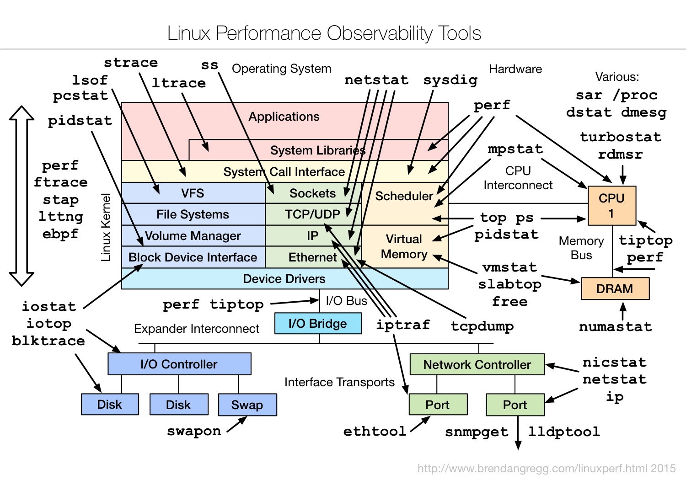

Linux 操作系统
对于 PHP 开发人员个人而言，用什么操作系统写代码并不重要，重要的是适合，用着顺手、用着爽。。。
@使用 Windows 的 PHP 开发同学们，鉴于 Windows 命令行窗口（cmd.exe）一如既往、毫无改进的表现，强烈推荐大家使用 Cmder 替代之。在中文环境下，Cmder 默认安装完毕后您可能会遇到一些问题，解决办法在此 - Cmder 简单使用小结
但是，毕竟PHP 程序多数情况都会运行在 Linux 服务器上，因此个人认为每个 PHP 开发人员都应该熟悉 Linux 系统常用操作以及相关 LA/NMP 环境的搭建、配置。
关于 Linux 发行版
关于 Linux 发行版的选择问题（好吧，又是坑。。。），不过从服务器用户数量来讲， Redhat 系、SUSE 系 与 Ubuntu 系占了多数 。相对比而言，个人更喜欢 Redhat系的 CentOS（关于 Fedora, Redhat 和 CentOS 三者的关系可以 参考这里 ），个人觉得 CentOS 跑服务器相对稳定些（受鸟哥影响较深）、系统本身也干净简单，缺点是很多包官方源里面没有，就算是 EPEL 里面也没多少东西，因此对于 LA/NMP 开发，这里推荐下 EPEL源 + IUS 源，具体的配置方法可以 参考这里 。
一些 Linux 命令/工具
粗体部分 - 个人认为应该多加关注的
- Shell
- echo, printf, test（写shell脚本判断条件 -n -z 傻傻分不清楚的时候就靠 ta 了）, sleep, sh, set
- 用户环境
- clear, env, export, history, passwd, su, sudo, exit, who
- 包管理
- yum, rpm or apt-get, dpkg
- 文件系统
- pwd, cd, cp, ls, mkdir, mv, rm, ln
- file, du, df, mount, touch, cat
- chmod, chown, chgrp, chksum
- 查找
- find, grep, whatis, whereis
- 文本处理
- awk, sed, cut, diff, sort, uniq, wc, xargs
- head, tail（tail -f）, less
- 进程相关
- at, cron, crontab, kill, killall, pgrep, ps, time, nohup, screen（远程会话管理）, supervisord（进程守护神）
- 网络
- dig, host, ifconfig, netstat, nslookup, ping, route, traceroute, iptables, wget, curl
- 压缩
- tar, gzip, unzip
- 远程
- ssh, scp, sftp, rsync（文件同步）
- 系统状况
- uname, free, df, du, top, htop(比 top 好用多了), iftop, iotop, iostat, isof

该图很好的说明了 Linux 下各种性能监测工具 -- from Linux perf Examples
- uname, free, df, du, top, htop(比 top 好用多了), iftop, iotop, iostat, isof
- 其他
- man (查阅命令帮助信息), alias, ab（简单性能测试）, service, chkconfig, ulimit, sysctl
扩展阅读：
- 鸟哥的 Linux 私房菜 - 简体版，此鸟哥是台湾的 Linux 大神鸟哥，不是 Laruence 鸟哥 :-) ，喜欢原汁原味繁体版的 请看这里 （当年还没出书的时候偶就看这里了，还顺便知道了一些鸟哥的轶事，比如飞蚊症、服兵役之类的。。。），不喜欢电子版的亦可以 支持纸质版
- Linux工具快速教程 - 这本书专注于Linux工具的最常用用法，以便读者能以最快时间掌握，并在工作中应用；
- 应该知道的 Linux 技巧 - Coolshell 陈皓前辈的一些总结，从前辈博客上学到了太多东西。。。 陈皓前辈更多关于 Linux 的文章
- Redhat 系转 Ubuntu 系快速上手 -英文， Ubuntu 为了抢用户也是拼了 :-)
- 知乎： Linux 坑之 - Linux 下为何要关闭 SELinux？ - 保持 SELinux 默认开启的情况下，你在开发过程中可能会遇到各种诡异问题，除非贵司对安全性有异常高的要求且有专业运维人员，个人还是建议装完系统就直接关闭 SELinux。